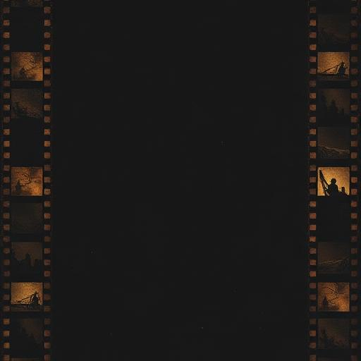

Journey back to the dawn of cinema.
Experience the magic of masterpieces from the golden age of motion pictures.

This archive is a tribute to timeless classics, restored prints, and the artistry that shaped the silver screen. From the Lumière Brothers' first flickering images to the silent masterpieces of the 1920s — all completely free to watch.